iD editor Quickstart¶
The iD editor is the de facto, browser-based OpenStreetMap editor. iD is fast and easy to use, and allows mapping from various data sources such as satellite and aerial imageries, GPS, Field Papers or Mapillary.
The iD editor is a great way to edit for small and easy changes that don’t require the advanced features of JOSM (a more advanced mapping editor). This chapter demonstrates the basics of editing with iD.
Contents
Starting the iD Editor¶
- The iD editor requires an active connection to the Internet.
- Open your Internet browser, and go to the OpenStreetMap website at http://www.openstreetmap.org.
- Login using your OpenStreetMap account.
- Pan and zoom the map to the area that you wish to edit. You can pan by holding the left mouse button and dragging the map to your desired area.
- Click on the small arrow next to Edit. Then click Edit with iD (in-browser editor).
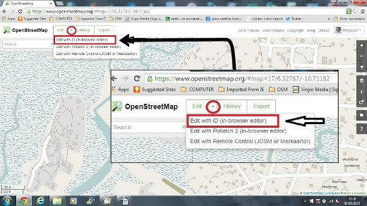
iD Editor User Interface¶
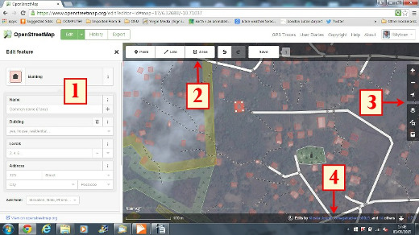
Edit Feature Panel: This panel shows tags from the object selected on the map.
You can add or edit tags from this panel.
Tools: This panel shows basic editing tools:
Draw point (node), shortcut key 1
Draw line (way), shortcut key 2 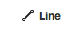
Draw shape (polygon), shortcut key 3 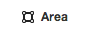
Undo, shortcut keys Ctrl+z 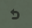
Redo, shortcut keys Ctrl+y 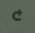
Save changes, shortcut keys Ctrl+s 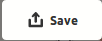
Map panel: This panel show various configuration functions:
Zoom In, shortcut key + 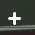
Zoom Out, shortcut key - 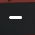
Go to your location 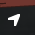
Configure background layer, shortcut key b
Map Data, shortcut key f
Open Help Menu, shortcut key h
Information panel: This panel shows various information, such as the scale bar and which users have contributed to the area.
Configuring the Background Layer¶
Click the Background settings button or use the shortcut key b.
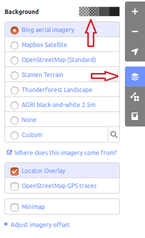
To change the brightness level click one of these boxes, the levels are 100%, 75%, 50%, and 25%
You also can change the background layer based on your desired tile provider (the default is Bing Aerial Imagery).
You can add your own map tiles by clicking on Custom. For example, if you want to add a Field Paper [1], click Custom then click on the magnifying glass (search) icon to open the following window:-
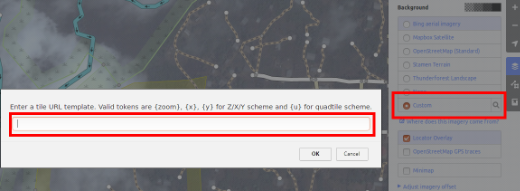 and enter your FieldPaper snapshot URL, which will be something like this: http://fieldpapers.org/snapshot.php?id=cqhmf2v9#18/37.80593/-122.22715
To display GPS tracks from your computer (GPX format), drag and drop the GPX file into iD editor.
To enable OpenStreetMap GPS traces click on the box. In the image below, public GPS traces are shown in various colors, indicating the direction of travel.
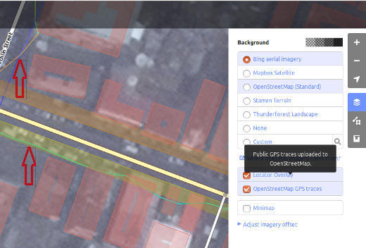
If there is imagery offset, you can correct the imagery offset by clicking Fix Alignment.
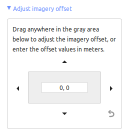


- Click the navigation buttons to move the imagery. Click the reset button to return to the default position.
Basic Editing with iD¶
Adding Points¶
To add a new point, click on the Point button.
Your mouse cursor will change into plus (+) sign. Now, click on a position that you know to mark a location. For example, if you know that there is a hospital in your area, click on the position of the hospital building.

Notice that a new point is added. At the same time, the left panel will change to show a form where you can select attributes for the object. Click Hospital Grounds to tag the point as a hospital.
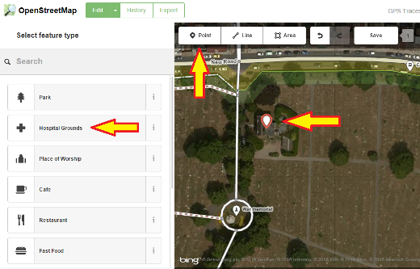
You can use the forms to fill detail information about your point. You can fill hospital name, address, and/or other additional information. Note that each feature will have different options, depending on what tag you choose from the feature panel.
If you make a mistake, such as a wrong location, you can move your point to a new location by holding the left mouse button on your point and dragging it. Or, if you want to delete your point, click the left mouse button on the point, activate the context menu by clicking with the right mouse button and then click the button which looks like a trashcan.

A « point » created in the iD editor is actually a standalone « node » with a set of « tags » on it.
Drawing Lines¶
To add a new line, click on the Line button.
Your mouse cursor will change into plus (+) sign. Find a road that hasn’t been drawn on the map and trace it. Click once on a point where the road segment begins, move your mouse, and click to add additional points. Double-click to end the drawing process. Notice the panel on the left.
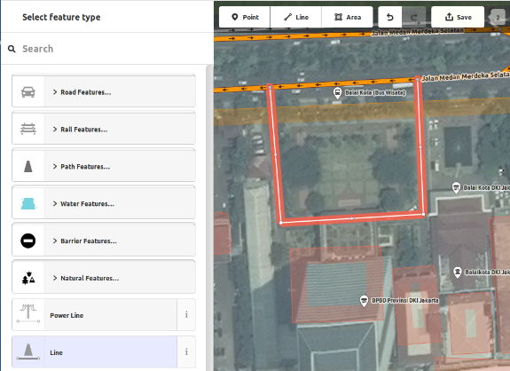
Just as with a point, select the appropriate tags for your line.
You can drag points from the line by clicking your left mouse button on a point and dragging it.
You also can move the whole line by selecting it, and choosing the Move tool. Then drag the line to a new position.
When you click your left mouse button on an individual point (node) on the line and click on the right mouse button to activate the context menu, you will see these tools:
Delete point from line.
Disconnect point from line. 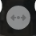
Split a line into two lines from the point you’ve selected. 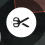
When you click your left mouse button on a line (but not on a point), you will see these tools:
Delete line.
Create a circle from a line (only active if the line is closed) 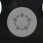
Form a square shape from a line (only active if the line is closed) 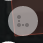
A « line » created in the iD editor is actually a « way » with « tags » on it.
Note
A special note about Deleting: In general you should avoid deleting other people’s mapping if it just needs improvement. You can delete your own mistakes, but you should try to adjust other people’s mapped objects if they need changes. This preserves the history of the items in the OSM database and is respectful of fellow mappers. If you really feel something should be deleted, consider asking the original mapper or one of the OSM email lists about it first.
Drawing Shapes (Polygons)¶
To add a new multi-sided shape, click on the Area button.

{kind=link}
{kind=link}
{kind=link}
{kind=link}
{kind=link}
{kind=link}
{kind=link}
{kind=link}
{kind=link}
{kind=link}
{kind=link}
{kind=link}
{kind=link}
{kind=link}
{kind=link}
- Your mouse cursor will change into plus (+) sign. Try to trace a building using the imagery as a guide.
- You will notice that the color of your shape will change depending on the attributes that you assign to it. 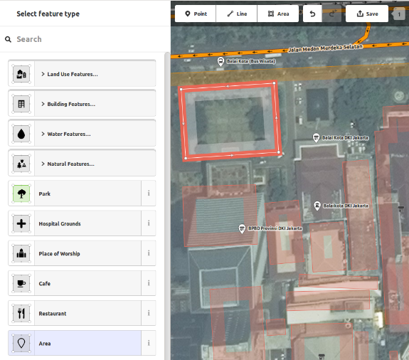
- The tools that are available when you select a shape and activate the context menu with the right mouse button are similar to those when you click on a line.
A « polygon » in the iD editor is actually a « closed way » with tags on it.
Drawing Multipolygons¶
Sometimes you have to draw a polygon which does not only have an outer contour but also one or more inner contours. Just think of buildings with inner courtyards or lakes with islands. Do not draw all these ways in one line so that the inner contours suspend from the outer contour. Rather draw these contours separate, attach tags to the outer contour only, select all contours and hit c in order to combine them into what is called a multipolygon.
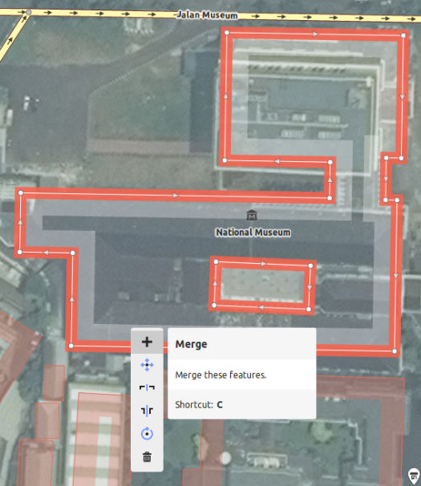
When you select any of the contours of the newly created multipolygon you can see on the left to which multipolygons it belongs
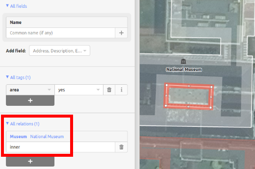
Saving Your Changes¶
- When (and if) you want to save your edits to OpenStreetMap, click the
Save button. The panel on the left will show the upload panel.
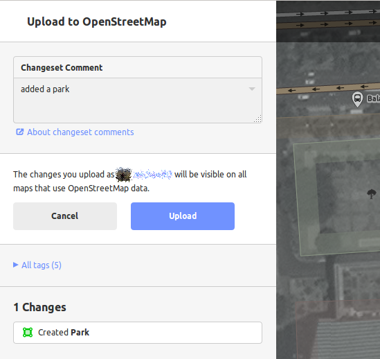
Enter a comment about your edits and click Save.
If you have edited the same feature (point, way or area) at the same time as another person was editing it, you will receive a warning that your edits cannot be uploaded until you have resolved the conflicts - choose whose edits to accept & upload your changes. Resolving conflicts often involves accepting the other persons edits, in which case you will probably wish to return to the feature in question and edit again (**this time save soon after the edit to try to avoid a conflict again!*).*
Additional Information and Custom Tags¶
When you are editing an object, you will see a strip of icons at the bottom of the attribute panel. You can add additional information by clicking these icons:
- Add elevation
- Add notes
- Add contacts / phone number
- Add source tag
- Add website
- Add accessibility information
- Add Wikipedia link 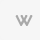
{kind=link}
{kind=link}
{kind=link}
{kind=link}
{kind=link}
{kind=link}
{kind=link}
Or, you can add custom tags by clicking All tags. 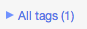
{kind=link}
This will show all the tags attached to the feature.
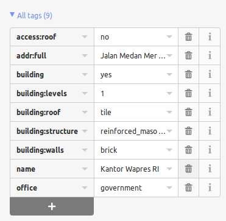
Click the plus sign (+) to add keys and values or click the trash icon to delete tags.
iD versus JOSM¶
iD is good for…
- When you are doing simple edits
- When you have fast Internet to load the imagery and save the edits
- When you want to be sure to follow a consistent and simple tagging scheme
- When you are restricted from installing a program on the computer you are using
JOSM is better…
- When you are adding many buildings (See buildings_tool plugin)
- When you are editing many polygons or lines that already exist
- When you are on an unreliable Internet connection or offline
- When you are using a specific tagging scheme (or custom presets)
What Next?¶
- Try the LearnOSM documentation, from which this quickstart was derived: http://learnosm.org/en/beginner/id-editor/